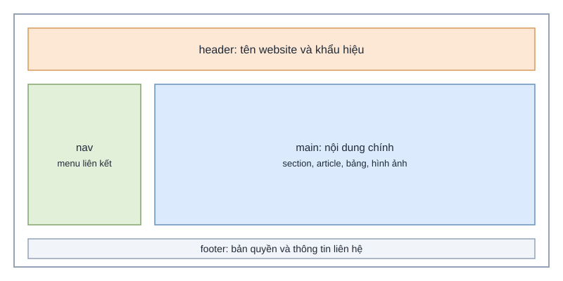

Bài học thuộc môn Lập trình web cơ bản (mã MH01). Bài này giới thiệu cách chia một trang web thành các vùng có ý nghĩa rõ ràng bằng các thẻ ngữ nghĩa của HTML5.
Mục tiêu học tập
- Phân biệt được vai trò của các thẻ header, nav, main, section, article và footer.
- Viết được khung HTML5 đầy đủ với khai báo ngôn ngữ, bảng mã và thẻ meta cần thiết.
- Đặt đúng số lượng thẻ h1 và cây tiêu đề cho một trang.
Nội dung bài học
Trước HTML5, các trang thường dùng nhiều thẻ div với tên lớp tự đặt, khiến máy tìm kiếm và trình đọc màn hình khó hiểu cấu trúc trang. Các thẻ ngữ nghĩa giải quyết vấn đề này vì tên thẻ đã mô tả vai trò của nội dung bên trong.
Các thẻ ngữ nghĩa thường dùng
- header: phần đầu của trang hoặc của một mục nội dung, thường chứa tên website và menu.
- nav: nhóm liên kết điều hướng chính.
- main: nội dung chính của trang, mỗi trang chỉ có một thẻ main.
- article: nội dung độc lập có thể tách ra và đọc riêng, ví dụ một bài viết.
- footer: phần cuối của trang, thường chứa thông tin bản quyền và liên hệ.

Thông số bài học
| Thông số | Giá trị |
|---|---|
| Thời lượng | 90 phút |
| Số câu hỏi kèm theo | 10 |
| Mục tiêu liên quan | Cấu trúc ngữ nghĩa; khung trang HTML |
| Tỷ lệ học sinh đạt mục tiêu (lớp thử nghiệm) | 72% |
Video minh họa
Bài tập tự luyện
Hãy viết một trang HTML5 có đủ header, nav, main và footer. Trong main, dùng ít nhất hai section và một article, mỗi phần có tiêu đề riêng.